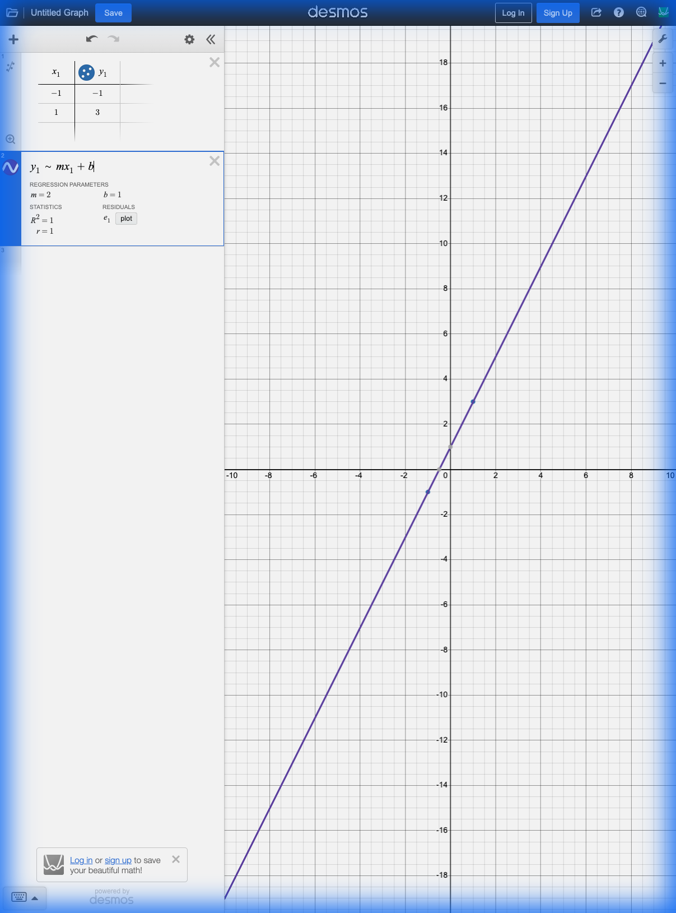
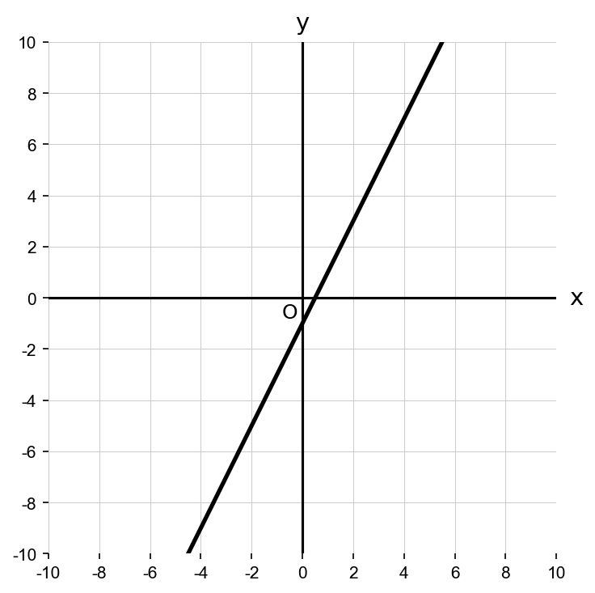
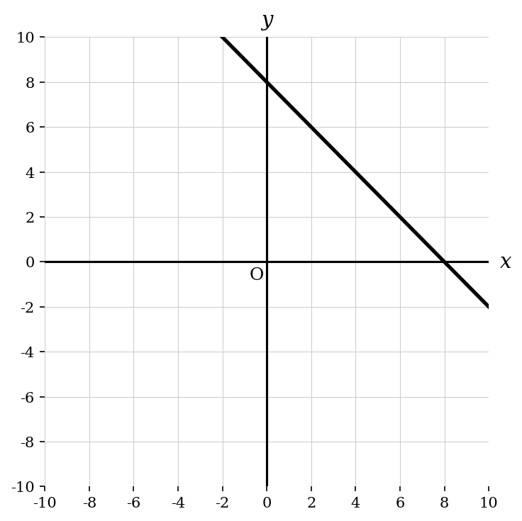
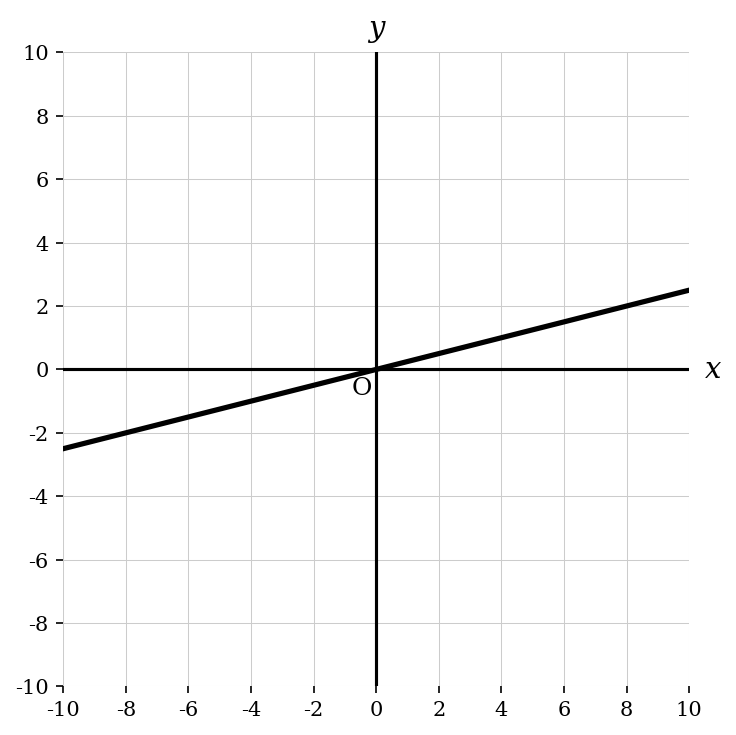
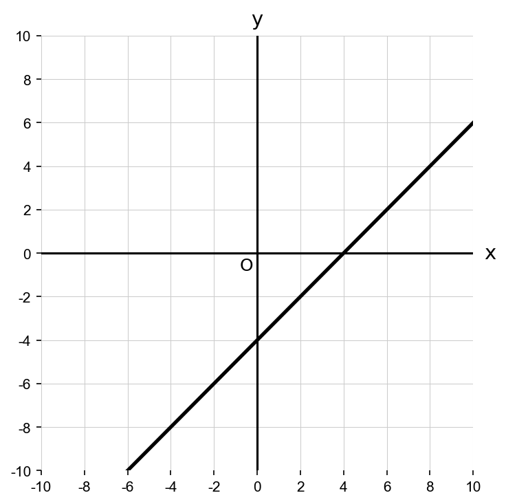
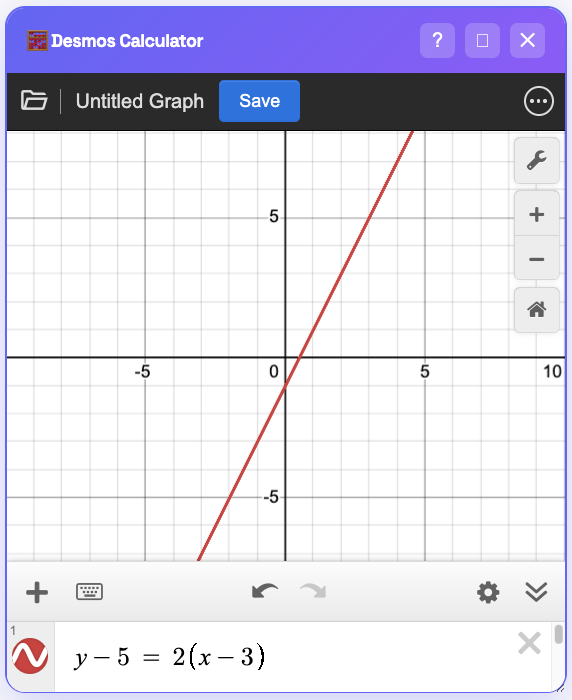

Linear Equations Mastery
Why solve for \(y\) when Desmos can handle the raw equations? Here is how to hack every form.
Desmos 4-Form Mastery
slope-intercept Form 1: Regression Hack
A line passes through the points \((-1, -1)\) and \((1, 3)\). What is the equation of the line?
Don't calculate slope. Use Regression.
1. Add a table in Desmos. Enter \((-1, -1)\) and \((1, 3)\).
2. Type y_1 ~ mx_1 + b.

Desmos tells you m=2 and b=1. The equation is \(y=2x+1\). The answer is (B).
point-slope Form 2: Direct Entry
A line passed through \((3, 5)\) and has a slope of \(2\). Which graph represents this line?




Use the Point-Slope Formula directly.
The Point-Slope Form is:
Given the point \((3, 5)\) and slope \(m=2\), just plug them in:
- Step 1: Identify \(x_1=3\), \(y_1=5\), and \(m=2\).
- Step 2: Substitute into the formula: \( y - 5 = 2(x - 3) \).
- Step 3: Type this exact equation into Desmos.
- Step 4: Match the graph Desmos draws with the correct option below.

The graph will pass through \((3, 5)\) and have a 2. Option (A) is the correct match.
standard form Form 3: Slope Hack
What is the slope of the line \(3x + 4y = 12\)?
Don't solve for y.
Type 3x + 4y = 12. Look at the intercepts.

Rise/Run from \((0, 3)\) to \((4, 0)\) is down 3, right 4. Slope = \(-3/4\).
School Way (Slow)
Subtract \(Ax\), divide by \(B\), simplify for slope...
Practix Way (Fast)
intercept form Form 4: Visual Check
Which equation has an x-intercept of 3 and a y-intercept of 4?
Use Regression for Intercepts.
Instead of manual entry, use regression to find \(a\) and \(b\). Type this exactly:

Desmos instantly finds a=3 and b=4. No math required. Done.
⚔️ Mastered the 4 Forms?
Put your speed to the test with our System Solver.
Solve Systems Instantly
Now that you can handle single lines, learn how to solve them when they cross.
Go to System Solver →